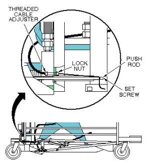
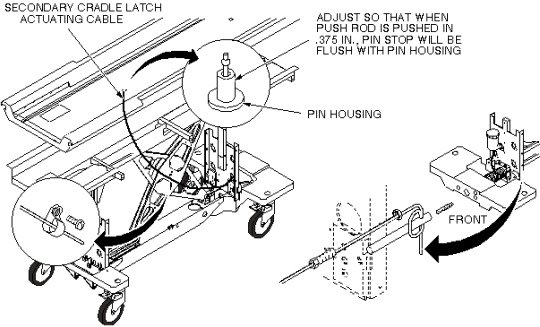

Operating Documentation
Direction 5440001-3, Rev# 6
Signa HDxt Service Methods
Module Version 4.0, Version Date 9/29/08
Operating Documentation |
| Required Persons | Preliminary Reqs | Procedure | Finalization |
|---|---|---|---|
| 1 or 2, depending on system | Not Applicable | 60-90 | Not Applicable |
This procedure is applicable to the following table products:
Signa Lightweight Patient Transport Table
Signa Oncology Patient Transport Table Option
Signa OR-Compatible Patient Transport Table Option
This procedure requires:
One person for a Signa Lightweight Patient Transport Table
Two people for a Signa Oncology or a Signa OR-Compatible Patient Transport Table Option
| Item | Qty | Effectivity | Part# | Manufacturer | |
|---|---|---|---|---|---|
| Cable | 1 | - | 46-271511p1 | - | |
| ||||
| To reduce the risk of exposing loose ferrous material to the magnetic field, it is mandatory that the patient transport is removed from magnet room during this procedure. | ||||
| ||||
| RISK OF PERSONAL INJURY! | ||||
| Lifting Mr parts, such as frus, toolkits and parts of the system without assistance (mechanical or additional personnel), can result in personal injury. | ||||
| the use of extra personnel is recommended to lift an object weighing more than 35 pounds AND less than 50 pounds. the use of mechanical lift assistance devices is required for objects weighing more than 90 pounds. |
| ||||
| RISK OF PERSONAL INJURY! | ||||
| Lifting Mr parts, such as frus, toolkits and parts of the system without assistance (mechanical or additional personnel), can result in personal injury. | ||||
| the use of extra personnel is recommended to lift an object weighing more than 35 pounds AND less than 50 pounds. the use of mechanical lift assistance devices is required for objects weighing more than 90 pounds. |
Undock patient transport and move from exam room.
Remove upper and lower left side covers (see Removing Cradle Assembly).
Remove cradle (see ).
Unfasten cable end from end of push rod (see Illustration 1).
Illustration 1: SECONDARY CRADLE LATCH ACTUATING CABLE

Pull cable out of pin housing (see Illustration 2).
Illustration 2: SECONDARY CRADLE LATCH CABLE ROUTING

Insert new cable through cable casing (see Illustration 2).
Route cable through cable casing (see Illustration 2).
Loop cable twice through hole in push rod and secure with set screw. Tighten securely to prevent cable from slipping (see Illustration 2).
Adjust cable so that when push rod is pushed in 3/8 inch (9.5 mm); pin stop is flush with pin housing. Use threaded cable adjuster for fine adjustment. Tighten lock nut after adjustment is complete, then cut off excess length of cable (see Illustration 2).
Return patient transport to scan room.
Dock patient transport.
Verify that release pin is flush to 1/16 inch (1.6 mm) below flush when table is docked.
Replace cradle and upper and lower side covers. Note position of Signa logo on outer covers, and position toward front of table.
No finalization steps.